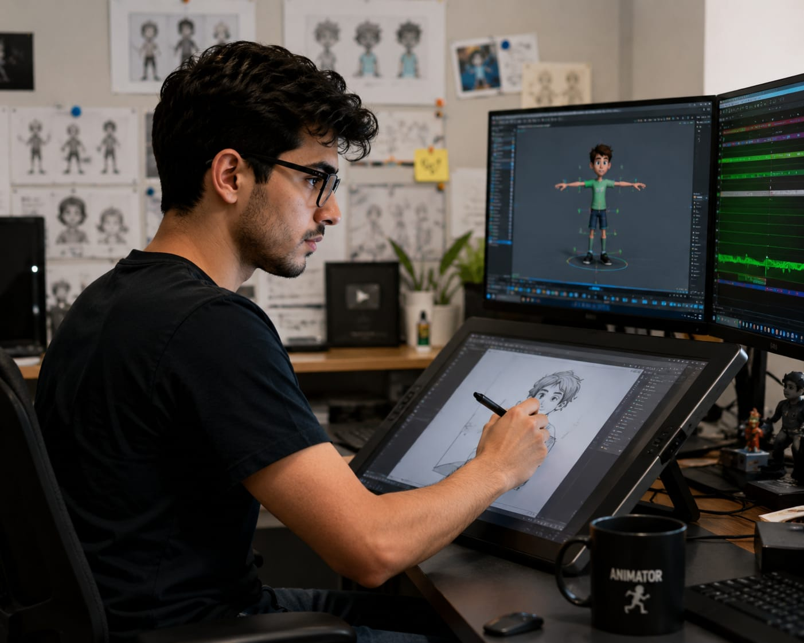

- Think about your favorite cartoon or animated movie
- At first, someone draws the characters and scenes.
- Then, an Animator uses software to turn these drawings into an animated video
- The characters begin to move, talk, and show emotions. 👉 In simple words: Animators turn drawings into moving animations.
Animator
🧑🏭 What Do They Do?

🎓 How to Become an Animator
The courses to pursue this career are given below :
After completing 12th, you can choose degree courses in animation, design, and multimedia to build strong creative and technical skills.
B.Sc Animation & Multimedia
Duration: 3 years
Eligibility: Class 12 (any stream)
Entrance Exam: CUET or institute entrance exams
B.Des (Animation)
Duration: 4 years
Eligibility: Class 12 (any stream)
Entrance Exam: NID DAT or UCEED
BA in Animation & VFX
Duration: 3 years
Eligibility: Class 12 (any stream)
Entrance Exam: Merit-based or university entrance
Bachelor of Visual Arts (BVA) in Animation
Duration: 3 to 4 years
Eligibility: Class 12 (any stream)
Entrance Exam: Merit-based or portfolio test
📝 Exam Details
(Click on the exam name to see full details)
NID DAT UCEED CUET Portfolio Review University Entrance ExamNote: Some top design colleges require entrance exams like NID DAT or UCEED. Many universities accept CUET or conduct their own tests. Portfolio and creativity also play an important role in admission.
After graduation, you can specialize in animation, VFX, or design through advanced courses and improve your skills for higher-level roles.
M.Sc Animation & VFX
Duration: 2 years
Eligibility: Bachelor’s degree in animation/design or related field
Entrance Exam: University entrance exams
MA in Animation
Duration: 2 years
Eligibility: Bachelor’s degree (any field, portfolio preferred)
Entrance Exam: Merit-based or interview
MA in Visual Effects & Animation
Duration: 2 years
Eligibility: Bachelor’s degree in related field
Entrance Exam: Entrance exam or portfolio review
M.Des (Animation)
Duration: 2 years
Eligibility: Bachelor’s in Design/Fine Arts/Architecture
Entrance Exam: CEED or NID DAT (PG)
PG Diploma in Animation
Duration: 1 to 2 years
Eligibility: Bachelor’s degree (any field)
Entrance Exam: Merit-based or interview
📝 Exam Details
(Click on the exam name to see full details)
CEED NID DAT (PG) Portfolio Review University Entrance Exams Personal InterviewNote: For postgraduate animation courses, exams like CEED or NID DAT (PG) are required for top design institutes. Many universities also consider portfolios, entrance tests, and interviews for admission.
This helps students learn animation principles, character movement, storytelling, rigging, and 3D animation.
Advanced Program in Animation & VFX
Duration: 528 hours
Eligibility: Class 10
Provider: Arena Animation
2D Animation
Duration: 12 months
Eligibility: Class 10 or class 12 pass
Provider: ZICA
3D Animation in Maya Professional
Duration: 6 months/ 220 hours
Eligibility: 10th and 12th pass
Provider: Morph Academy
MAYA PRO
Duration: 192 hours
Eligibility: Open to all
Provider: MAAC
Animation Courses
Eligibility: Open to all
Provider: Coursera
Animation Classes
Eligibility: Open to all
Provider: Skillshare
Note: These courses help students learn character acting, timing, motion principles, storytelling, 2D animation, and 3D animation from beginner to advanced level.
Note:
(Age limits, marks, and admission process may vary depending on the college or state.
Below are some colleges that offer these courses.
These courses are available in many colleges and universities across India. You can choose colleges based on your location, budget, and entrance exams.)
🏛️ Colleges offering these courses in India
After Class 12
Lovely Professional University (LPU), Punjab National Institute of Design (NID), Ahmedabad Amity University, Noida Indian Institute of Film & Animation Industrial Design Centre (IDC), IIT Bombay Whistling Woods International (WWI), MumbaiAfter Graduation
Jain University, Bengaluru Amity University Jamia Millia Islamia, New Delhi National Institute of Design (NID) – M.Des in Animation Film Design ICAT College of Design & MediaShort Courses & Certifications
Arena Animation Zee Institute of Creative Art (ZICA) Morph Academy MAAC Coursera SkillshareSTEP 1
Imagine you are working as an Animator.
STEP 2
You receive character designs and scene ideas.
STEP 3
You create character movements using animation software.
STEP 4
You improve movements, timing, and expressions.
STEP 5
You work with artists, designers, and directors.
STEP 6
The final animation is added to movies, games, or videos.
STEP 7
If you enjoy creativity and storytelling, this career may suit you.
Where do Animators work? (Job Roles + Growth)
Animators work in : Animation and VFX studios, Film and Television production companies, Gaming companies, Advertising agencies, Design studios, Media and Entertainment companies and Virtual production studios.
🟢 Beginner Roles
Junior 2D Animator
Create basic character movements and clean animation frames.
Motion Graphics Artist
Create animated videos, ads, and logo animations.
3D Asset Modeler
Build 3D props, environments, and digital objects.
Roto & Paint Artist
Remove unwanted elements and edit frames carefully.
🔵 Mid-Level Roles
Character Animator
Create realistic movements, acting, and expressions for characters.
Rigging Artist
Build skeleton systems to make characters movable.
Lighting & Texturing Artist
Add textures and lighting for realistic final visuals.
VFX Compositor
Combine animation, effects, and footage into final scenes.
🟣 Advanced Roles
Animation Director
Manage animation teams and maintain visual consistency.
Art Director
Define the visual style, colors, and design direction.
Technical Director
Solve technical problems and develop animation tools.
Animation Studios
Work on animated movies, cartoons, and web series for international audiences.
Gaming Companies
Create character animations and movements for global video games.
Film & VFX Studios
Work on visual effects and animation for international movies and TV shows.
Advertising Agencies
Create animated ads and promotional videos for global brands.
Freelance Animation
Work with clients around the world through online platforms.
(Click Yes or No for each question)
1. When you watch animated movies or cartoons, do you wonder how the characters move and come to life?
2. Do you love creating stories?
3. Are you interested in creating things using computer?
4. Imagine you are working as an Animator for a cartoon. You are asked to create a scene where "a character walks into a room, picks up a bag, and runs outside." You draw each scene and create the character movements using animation software. You make sure the movements look natural and smooth. Do you like this tye of work?
5. You are a part of a team that creates Cartoons. The character in the cartoon has to speak a dialogue. You match the character's mouth movements with the recorded voice. You adjust the movements so that it looks like the character is actually speaking. Does this type of wirk excites you?